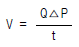
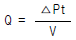
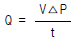
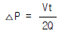

누설비파괴검사기사(구) (2003-05-25 기출문제)
1과목: 누설시험원리
1. 다량의 미소누설기포가 발생하고 있는 용접부에서 포집관으로 1cm3를 포집하는데 40초 걸렸다면 누설율은?
- 0.25 Pa.m3/s
- 2.5x10-2 Pa.m3/s
- 2.5x10-3 Pa.m3/s
- 2.5x10-4 Pa.m3/s
(정답률: 알수없음)

2. 누설시험에서 다음 중 시험의 착오를 줄일 수 있는 경우는?
- 감도를 너무 높게 할 경우
- 한가지 누설시험만 사용하는 경우
- 두가지 이상의 누설시험을 실시하는 경우
- 주위 환경을 일정하게 4℃이하로 유지하는 경우
(정답률: 알수없음)
3. 계의 압력을 감압하여 대기압보다 낮게 사용하는 누설검사법은?
- 기체 가압법
- 진공법
- 연속형 누설방출법
- 표준누설법
(정답률: 알수없음)
4. 할로겐 누설시험에서 주로 사용하는 시험방법은?
- 진공 용기법
- 쉬러드법
- 스프레이법
- 진공적분법
(정답률: 알수없음)
5. 압력용기의 검출프로브(Detector probe)를 이용한 헬륨질량분석법(Helium Mass Spectrometer Test)의 절차를 설명한 것이다. 틀린 것은?
- 헬륨으로 압력용기를 가압한다.
- 헬륨을 용기 외부에 적용한다.
- 검출프로브로 용기 표면을 탐상한다.
- 검출프로브와 탐상면의 거리는 일정하게 유지한다.
(정답률: 알수없음)
6. 펌프의 배기 속도가 50,000ℓ/s이고 시험체의 용적이 20,000m3일 때 후드법에서 응답시간은 얼마인가?
- 24초
- 2분30초
- 6분40초
- 10분
(정답률: 알수없음)
7. 발(기)포누설시험의 일반적인 감도는?
- 10-3∼10-5 Pa.m3/s
- 10-6∼10-8 Pa.m3/s
- 10-9∼10-11 Pa.m3/s
- 10-12∼10-14 Pa.m3/s
(정답률: 알수없음)
8. 다음 중에서 고정 부피계의 누설률을 결정하기 위한 기초 압력 변화식은? (단, Q : 누설률, P1, P2 : 측정개시, 종료시의 시험체의 게이지 압력, V : 시험체의 내용적, t : 측정시간)
- Q = (P2 - P1)V/t
- P1V = Q/t
- P1 V1 = P2 V2
- Q = V(Δ P2/Δ t)
(정답률: 알수없음)
9. 할로겐누설시험에서 할로겐 스니퍼를 이용하여 검사를 수행하는 동안 기기의 감도를 몇 시간 간격으로 측정해야 하는가?
- 2
- 4
- 6
- 8
(정답률: 알수없음)
10. 가열양극 할로겐 누설검출기에 대한 설명 중 틀린 것은?
- 기본적인 기기는 할로겐 누설검출기와 휴대용 검출프로브로 구성되어 있다.
- 검출장치 구조는 동심 실린더의 형태로 되어 있다.
- 안쪽실린더는 내부의 열선에 의해 가열된다.
- 바깥쪽 실린더는 양전기 전위에서 작동된다.
(정답률: 알수없음)
11. 헬륨질량분석기(Helium Mass Spectrometer)의 검출호스의 길이가 증가할 때 반응시간은 어떻게 변화되는가?
- 감소한다.
- 증가한다.
- 영향이 없다.
- 증가 후 감소한다.
(정답률: 알수없음)
12. 다음 중 누설감도가 가장 좋은 누설시험 방법은?
- 초음파법
- 화학물질 침투 방법
- 기포시험
- 할로겐다이오드 방법
(정답률: 알수없음)
13. 압력변화측정시험에서 시험결과가 의심스러운 경우 시험의 신뢰성을 증가시키기 위하여 다음 중 가장 효율적인 방법은?
- 시험을 중지하고 시험장치를 교정한 다음 재시험을 실시한다.
- 시험을 중지하고 시험장비를 정확도가 더 높은 장비로 교체한다.
- 시험을 중지하고 모든 시험조건과 시험장치를 점검한 다음 재시험을 실시한다.
- 시험기간을 연장한다.
(정답률: 알수없음)
14. 1기압(14.7psig)의 압력차를 갖는 시험조건에서 발포누설시험(bubble leak test)에 의한 검출가능 범위는?
- 10-2∼10-3std.cm3/s
- 10-4∼10-5std.cm3/s
- 10-5∼10-6std.cm3/s
- 10-6∼10-7std.cm3/s
(정답률: 알수없음)
15. 어떠한 용기를 압력변화시험을 하는 동안 온도가 10℃에서 40℃로 변했다. 이 때 용기에 누설은 없다고 가정하면 용기내의 압력은 어떻게 변하는가?
- 증가한다.
- 감소한다.
- 변화없다.
- 수렴한다.
(정답률: 알수없음)
16. 암모니아의 특성 중 틀린 것은?
- 폭발범위는 40∼45%이다.
- 동이나 황동에 사용할 수 없다.
- 검출방법은 붉은 리트머스를 푸르게 변화시킨다.
- 할로겐과 반응하여 질소를 유리시킨다.
(정답률: 알수없음)
17. 압력변화 누설검사법에서 누설율, 체적, 압력변화, 시간에 관한 관계식으로 맞는 것은?(단, 뽁P : 시험동안 변한 압력, Q : 누설율, t : 시험 기간, V : 시험시의 체적 )




(정답률: 알수없음)
18. 표준상태 공기의 체적은 시료 안에 있는 기체의 분자수에 바로 비례하는 법칙은?
- 부라운 운동
- 달톤의 법칙
- 아보가드로의 법칙
- 층분포의 원리
(정답률: 알수없음)
19. 추적가스 중에서 헬륨이나 수소가스의 확산율은 프레온가스에 비해 어느 정도 높은가?
- 4~5배
- 6~7배
- 8~9배
- 10배 이상
(정답률: 알수없음)
20. 기(발)포누설시험용으로 쓸 안전한 알루미늄 재질의 진공 박스에 유리창을 달려고 한다. 설계 압력(kPa), 그리고 재질 기준을 충족시키는 것은?
- 압력 55, 강화된 판유리(tempered plate glass)
- 압력 55, 자동 안전유리(auto safety glass)
- 압력 103, 자동 안전유리(auto safety glass)
- 압력 103, 강화된 판유리(tempered plate glass)
(정답률: 알수없음)
2과목: 누설검사
21. 절대온도에 대한 다음 식 중에서 틀린 것은?
- 0 K = -359.67℉
- K = (460 + ℉)/1.8
- 0 K = -273℃
- K = 273 + ℃
(정답률: 알수없음)
22. 진공식 발포누설검사에 대한 설명으로 틀린 것은?
- 검사체의 표면이 평면이어야 하며 진공상자의 관찰창과 검사체 표면이 근접할 수 있도록 만든다.
- 시스템 전체가 가압되어 다른 누설검사를 수행할 수 없는 경우에 유용하다.
- 대기압의 기체를 갖고 있는 압력 경계시스템 및 용접부 등의 단면 두께를 관통하는 누설을 검출한다.
- 검출될 수 있는 전형적인 불연속의 종류는 균열, 기공, 융합부족 등이다.
(정답률: 알수없음)
23. 발포누설검사시 사용되는 발포액 구비조건이 아닌 것은?
- 표면장력이 클 것
- 점도가 낮을 것
- 발포액 자체에 거품이 없을 것
- 온도에 의한 열화가 없을 것
(정답률: 알수없음)
24. 발(기)포누설시험에 의한 누설검사의 기본적인 형식이 아닌 것은?
- 기포법(foam method)
- 가압발포액법(liquid film method)
- 진공상자법(vaccum box method)
- 침지법(immersion method)
(정답률: 알수없음)
25. 헬륨질량분석 누설검출기의 반응시간(response time)이란 연속적으로 무한하게 적용하여 얻은 최대 지시치의 몇 %가 되는 지시를 의미하는가?
- 50%
- 63%
- 75%
- 88%
(정답률: 알수없음)
26. 시험체를 가압한 후 압력변화측정법으로 검사하여 10℃의 온도에서 60psi로 가압한 후 일정시간이 경과하였다. 누설에 의한 압력변화는 없었다고 가정하고 온도를 30℃로 상승시켰다면 시험체 내부의 압력은?
- 58.2psi
- 64.2psi
- 70.2psi
- 76.2psi
(정답률: 알수없음)
27. 누설검사 압력단위 중 틀린 것은?
- 1atm = 760torrs
- 1Pa = 100N/cm2
- 1torr = 100mmHg
- 1mbar = 100Pa
(정답률: 알수없음)
28. 다음 중 할로겐다이오드 누설 검출기의 사용상 제한사항으로서 옳은 것은?
- 고온의 가열기로 인하여 폭발성 또는 가연성 기체가 있을 경우에는 위험하다.
- 좀 더 정밀하고 감도를 높인 장비는 휴대가 불가능하다.
- 공업용으로 쓰이는 할로겐 누설검출기의 종류중에서 가장 감도가 낮다.
- 이들 기기들이 정상적으로 작동하기 위해서 높은 할로겐 주위압력이 필요하다.
(정답률: 알수없음)
29. 발포누설검사에서 감도를 증가시키는 방법으로 적절하지 못한 것은?
- 온도를 증가시킨다.
- 관찰조건을 개선시킨다.
- 관찰시간을 증가시킨다.
- 누설을 통과하는 기체의 양을 증가시킨다.
(정답률: 알수없음)
30. 비금속의 활성원소인 할로겐족 원소에 속하는 것은?
- F
- Ba
- Ca
- Pt
(정답률: 알수없음)
31. 발포누설검사시 시험체의 외부 온도는 어느 범위로 유지하여야 하는가?
- 4 ~ 52℃
- 69 ~ 80℃
- 50℃ 이상
- 10℃ 이하
(정답률: 알수없음)
32. 헬륨질량분석 누설시험의 진공시스템 속에서 추적자 가스로 쓰인 헬륨이 시스템의 벽에 흡착되었다가 뒤늦게 분리되어 겉보기 누설로 나타나는 것은 무엇으로 해석하여야 하는가?
- 응축
- 게터(getter)
- 분자 누설
- 행업(hang-up)
(정답률: 알수없음)
33. 압력변화시험-가압법에서 검사 오류를 발생시키는 가장 큰 원인 두 가지는 무엇인가?
- 시험체 체적, 압력
- 시험체 체적, 온도변화
- 시험체 체적, 시험기간
- 시험체 체적, 검사자 숙련도
(정답률: 알수없음)
34. 누설시험에 헬륨가스가 이용되는 이유로 맞지 않는 것은?
- 분자 직경이 작은 기체는 작은 틈에서도 누설 검출이 쉽다.
- 공기 중이나 진공 등의 방출가스 중에 헬륨이 포함되어 있지 않다.
- 화학적 불활성으로 무해하다.
- 시험체 벽면에 흡착되어 반복 측정이 용이하다.
(정답률: 알수없음)
35. 침투탐상제를 이용한 누설검사에 대한 내용으로 옳은 것은?
- 가압장치가 필요하다.
- 두꺼운 시험체에 적합하다.
- 모세관현상 원리를 이용한다.
- 세척처리 과정이 중요하다.
(정답률: 알수없음)
36. 대기 중에서 헬륨질량 분석기의 감도는?
- 10-1∼10-3Pa.m3/s
- 10-3∼10-5Pa.m3/s
- 10-5∼10-7Pa.m3/s
- 10-7∼10-9Pa.m3/s
(정답률: 알수없음)
37. 대형 진공시스템으로 누설검사시 질량분석기의 부착위치로 맞는 것은?
- 시험 물체에 직접 부착
- 확산형 진공펌프 위에 부착
- 확산형 진공펌프 앞쪽에 부착
- 확산형 진공펌프 뒤쪽에 부착
(정답률: 알수없음)
38. 압력용기 등의 고압 용기에서 작은 구멍을 통해 누설되면 초음파가 발생할 때 초음파 수신기를 이용하여 누설검사를 실시할 경우 틀린 것은?
- 10-3atm.cm3/sec이하 누설에서는 사용할 수 없다.
- 기체보다 액체 누설탐지가 용이하다.
- 지중 배관의 누설은 검지하기 곤란하다.
- 누설 위치를 알아낼 수 있다.
(정답률: 알수없음)
39. 비누용액을 사용한 발포액법(가압법)으로 누설검사를 실시할 때 사용되는 가압가스로 적절하지 않은 것은?
- 질소(N2)
- 헬륨(He)
- 산소(O2)
- 암모니아(NH3)
(정답률: 알수없음)
40. 다음 중 시험종료 후 용기 내에 남아있는 할로겐추적가스와 습기가 미치는 영향은？
- 용기를 냉각시킨다.
- 폭발성 혼합물을 생성한다.
- 응력부식을 가속시킨다.
- 포스겐 가스를 생성한다.
(정답률: 알수없음)
3과목: 누설관련규격
41. KS B 6225에 의한 강제 석유저장탱크의 밑판, 애뉼러 플레이트의 용접부는 진공에서 누설시험을 실시한다. 이때 압력은 대기압보다 최소한 수은주로 몇 kPa 낮은 값으로 하는가?
- 15.3
- 23.3
- 35.3
- 53.3
(정답률: 알수없음)
42. 할로겐다이오드검출 프로브시험에서 검출될 수 없는 가스는?
- 불소(F)
- 염화메틸렌(Methylene Chloride)
- 염소(Cl)
- 헬륨(He)
(정답률: 알수없음)
43. KS B 6202 주철 보일러의 구조에 따라 보일러 각 부분에 대하여 수압시험을 할 때의 올바른 사용압력은?
- 최초 사용압력 1kgf/cm2이하의 경우에는 시험압력 2kgf/cm2
- 최초 사용압력 2kgf/cm2이하의 경우에는 시험압력 4kgf/cm2
- 최초 사용압력 2kgf/cm2이하의 경우에는 최고사용 압력의 1.5배
- 최초 사용압력 2kgf/cm2이상의 경우에는 최고사용 압력의 1.25배
(정답률: 알수없음)
44. KS B 6262 탄산가스 소화기의 밸브에 수압을 가했을 때 어느 정도의 압력에서 밸브가 파손되지 않아야 하는가?
- 100kgf/cm2 ~ 130kgf/cm2
- 130kgf/cm2 ~ 160kgf/cm2
- 150kgf/cm2 ~ 200kgf/cm2
- 180kgf/cm2 ~ 250kgf/cm2
(정답률: 알수없음)
45. KS B 6233 육용 강제 보일러 구조를 적용한 최고사용압력이 이상의 압력을 받을 우려가 없는 온수 보일러가 있다. 이 보일러의 최고 사용압력이 4.3kgf/cm2(0.43MPa)일 때 수압시험 시 적용하여야 할 압력은?
- 0.33MPa
- 0.41MPa
- 0.53MPa
- 0.68MPa
(정답률: 알수없음)
46. ASME code에 따른 누설시험 결과보고서에 기재되어야 할 기본 사항의 조합으로 틀린 것은?
- 시험일자, 시험방법, 시험결과, 시험장비명
- 시험일자, 시험방법, 시험결과, 보고자의 직책
- 시험방법, 시험장비명, 시험조건, 검사자의 자격
- 시험방법, 시험결과, 시험장비명, 검사자의 성명
(정답률: 알수없음)
47. ASTM E 1003의 수압누설시험 표준방법에서 육안검사법의 외부 누설감도를 개선시키는 내용이 아닌 것은?
- 방사성 동위원소를 물에 희석한다.
- 습기와 접촉하면 색깔이 변하는 물 현상제를 적용한다.
- 가시염료 추적자를 시험액에 적용한다.
- 시험액에 형광염료 추적자를 적용한다.
(정답률: 알수없음)
48. 암모니아 가스는 인체에 유해하다. ASTM에 의해 누설검사 수행시 암모니아에 대한 노출제한 최대치는 시간당 얼마인가?
- 100ppm
- 500ppm
- 1000ppm
- 2000ppm
(정답률: 알수없음)
49. 다음의 서버에 대한 설명이 잘못된 것은?
- SMTP 서버 : 메일러로부터 전자우편을 받아서 상대방의 SMTP 서버로 보낸다.
- FTP 서버 : 파일의 송수신을 지원한다.
- Proxy 서버 : 특정 조식의 랜과 외부 네트워크 사이에서 방화벽 역할을 수행하며, 동시에 여러 외부 서버의 데이터를 대신 받아주는 역할을 한다.
- Gopher 서버 : 원격 시스템 접속을 지원한다.
(정답률: 알수없음)
50. ASME Sec.VⅢ Div.1에 의거 설계한 열교환기가 수압시험압력 150kgf/cm2에서 이상이 없었다. 시험온도 25℃에서의 응력이 40kgf/mm2, 설계온도 750℃에서의 응력이 30kgf/cm2이었다면 설계상 최대사용압력은 얼마인가?
- 75kgf/cm2
- 100kgf/cm2
- 133kgf/cm2
- 150kgf/cm2
(정답률: 알수없음)
51. ASME Sec.V art.10에서 헬륨질량분석시험중 후드(Hood)법에 의해 시험을 실시하였을 경우 누설율이 허용 범위를 초과한다면 그에 대한 조치는 다음 중 어느 것이 가장 적절한 것이겠는가?
- 불합격시키고 전체를 수정한다.
- 추적 프로브법(Tracer Probe)으로 재시험하여 누설위치를 확인한다.
- 장비를 재 교정한 후 재시험한다.
- 헬륨가스의 농도를 1/2로 줄여 재시험한다.
(정답률: 알수없음)
52. 할로겐누설검사에서 탐촉자 끝단과 검사체와의 거리는 어느 정도가 되어야 하는가?
- 1/8인치
- 1/2인치
- 1인치
- 5인치
(정답률: 알수없음)
53. 윈도우 운영체제에서 디스크의 단편화를 제거하기 위한 목적의 프로그램은?
- 디스크 검사
- 디스크 정리
- 디스크 조각모음
- 디스크 공간 늘림
(정답률: 알수없음)
54. KEPIC(전력산업기술기준) MEN 8101 "누설검사 일반기준"에 따라 진공식 기포검사를 실시하고자 한다. 연속된 용접부를 전수검사할 경우 진공상자의 중첩 간격 규정은?
- 최소 10mm 이상
- 최소 25mm 이상
- 최소 50mm 이상
- 최소 100mm 이상
(정답률: 알수없음)
55. 인터넷 상에서 사용자가 원하는 키워드를 입력하여 사이트를 찾고자 할 때 사용할 프로그램은?
- 즐겨찾기
- 검색엔진
- 목록보기
- 인터넷옵션
(정답률: 알수없음)
56. 다른 언급이 없는 한 할로겐다이오드 검출기 프로브법으로 누설검사하였을 때 허용 누설율로 간주할 수 있는 누설율을 ASME Code에서 얼마로 규정하고 있는가?
- 1x10-7 std.cm3/sec
- 1x10-6 std.cm3/sec
- 1x10-5 std.cm3/sec
- 1x10-4 std.cm3/sec
(정답률: 알수없음)
57. KS B 6225 강제 석유 저장 탱크의 주조(전체용접부)에서 몸통의 물 채우기시 밑판 전면에 걸친 침하나 변형을 조사해야 하는 시기는?
- 물 채우기 전
- 물 채우기 중
- 최고수위 유지시간 중
- 물 빼기 후
(정답률: 알수없음)
58. 용접부 길이가 2000㎜일 때 진공상자를 이용하여 누설검사 하려고 한다. 최소 몇 회 작업으로 검사가 완료될 수 있는가? (단, 진공상자의 개스킷 부위를 제외한 크기는 500㎜ 이다)
- 3회
- 4회
- 5회
- 6회
(정답률: 알수없음)
59. 전자우편을 이용할 때 사용자의 컴퓨터에서 다른 시스템에 도착한 전자우편을 볼 수 있도록 하는 프로토콜은?
- POP3
- SMTP
- NMTP
- HTTP
(정답률: 알수없음)
60. 인터넷의 개념과 관련이 없는 것은?
- 수많은 사람이나 기관과 연결할 수 있는 개방구조이다.
- 독자적인 주소를 할당받는다.
- 전세계 통신망들이 합쳐진 네트워크의 네트워크이다.
- 단일 운영체제로 연결된 네트워크 통신망이다.
(정답률: 알수없음)
4과목: 금속재료학
61. 와이(Y)합금을 올바르게 설명한 것은?
- Aℓ -Zn 합금에 소량의 Mg 과 Mn을 첨가한 내열성합금
- Aℓ -Cu 합금에 소량의 Mg 과 Ni를 첨가한 내열성합금
- Aℓ -Si 합금에 소량의 Mg 과 Pb을 첨가한 내열성합금
- Aℓ -Fe 합금에 소량의 Mg 과 Sn을 첨가한 내열성합금
(정답률: 알수없음)
62. 열전대로 사용되는 Alumel 이란 어느 계통의 합금인가?
- Ni-Aℓ -Fe 합금
- Aℓ -Cr-Co 합금
- Ni-Mg -Cu 합금
- Aℓ -Mn-Pb 합금
(정답률: 알수없음)
63. 아연의 성질을 올바르게 설명한 것은?
- 주조상태에서는 조대결정이 되므로 연신이 낮고 취약 하여 상온가공이 어렵다.
- 체심입방격자이며 고온에서 증기압이 낮다.
- 건조한 공기중에서는 산화가 잘되며 산, 알칼리에 강하다.
- Fe가 0.008% 이상이 되면 연질의 FeZn7상이 나타나 인성과 인장강도를 증가시킨다.
(정답률: 알수없음)
64. 마우러 조직도(maurer diagram)란?
- 주철에서 C 와 Si 양에 따른 주철의 조직 관계
- 주철에서 C 와 P 양에 따른 주철의 조직 관계
- 주철에서 C 와 Mn 양에 따른 주철의 조직 관계
- 주철에서 C 와 S 양에 따른 주철의 조직 관계
(정답률: 알수없음)
65. Ti 제련시 사염화티타늄(TiCl4)을 환원하여 스폰지(sponge)티탄을 얻는데 사용하는 환원제는?
- Aℓ
- Mg
- Cu
- Si
(정답률: 알수없음)
66. 석출경화형 스테인리스강인 것은?
- SS 형
- RS 형
- EF 형
- PH 형
(정답률: 알수없음)
67. 서브 제로(sub-zero)에 대한 설명 중 맞지 않는 것은?
- 0℃이하의 온도에서 냉각시키는 조작이다.
- 마텐자이트변태를 중지시키기 위한 것이다.
- 마텐자이트변태를 진행시키기 위한 것이다.
- 심냉처리라고도 한다.
(정답률: 알수없음)
68. 열처리 목적에 적합하지 않는 것은?
- 조직을 연화시키거나 기계가공에 적합한상태로 한다.
- 조직을 조대화시키고 방향성을 크게하며 편석을 많게 한다.
- 냉간가공 후 나쁜 영향을 제거한다.
- 조직을 안정화시키고 내식성을 개선시킨다.
(정답률: 알수없음)
69. 고력황동의 조직으로 맞는 것은?
- δ + α
- α + σ
- α + β
- β + γ
(정답률: 알수없음)
70. 자석강이 아닌 것은?
- NKS강
- Koster강
- MK강
- Vanity강
(정답률: 알수없음)
71. Silumin의 개량 처리법에 있어서 미량의 Na 첨가에 대한설명 중 가장 옳은 것은?
- 과냉현상과 결정성장의 저지에 의한다.
- 융체화 처리에 따른 공공(vacancy)의 형성에 의한다.
- 풀림에 따른 응고핵발생수의 증가에 의한다.
- 풀림 처리에 따른 결정립성장에 의한다.
(정답률: 알수없음)
72. Fe3C의 금속간 화합물에 있어서의 탄소의 원자비는?
- 25%
- 40%
- 60%
- 85%
(정답률: 알수없음)
73. 세라다이징(sherardizing)은 어느 금속을 철강제품의 표면에 확산 피복시킨 것인가?
- Cr
- Aℓ
- Si
- Zn
(정답률: 알수없음)
74. 피검면의 상황을 셀루로이드피막에 옮겨서 이것을 현미경으로 검사하는 방법은?
- EDT 법
- IMPULES 법
- UT - NDT 법
- SUMP 법
(정답률: 알수없음)
75. 델타 메탈(delta metal)의 설명이 틀린 것은?
- 주물이나 단조재로 사용되며 고온가공성이 양호하다.
- 6:4 황동에 1% 내외의 Fe 가 포함된 것이다.
- Cu 54∼58%, Sn 40∼43%, Mg 1% 이내의 합금이다.
- 내식성이 우수하므로 선박, 광산, 수력기계, 화학 기계 볼트 너트 등에 사용된다.
(정답률: 알수없음)
76. 귀금속에 속하지 않는 것은?
- 철
- 금
- 은
- 백금
(정답률: 알수없음)
77. 주물용 Aℓ 청동에 대한 설명 중 틀린 것은?
- 고력황동을 사용해서 만든 프로펠러 보다 중량을 10∼20% 가볍게 할 수 있다.
- 내해수성이 좋아 대형 프로펠러를 만들수 있다.
- 경도, 내마모성이 나쁘다.
- 화학 공업장치 분야에 사용된다.
(정답률: 알수없음)
78. 활자(Type metal)합금은?
- Cu-Sb-Zr
- Fe-Zn-Sb
- Pb-Sb-Sn
- Al-Se-Zn
(정답률: 알수없음)
79. 탄소강에서 상온취성(cold shortness)의 원인이 되는 원소는?
- 황(S)
- 인(P)
- 규소(Si)
- 망간(Mn)
(정답률: 알수없음)
80. 스프링강으로 가장 적당한 조직은?
- 페라이트
- 오스테나이트
- 솔바이트
- 시멘타이트
(정답률: 알수없음)
5과목: 용접일반
81. 가스용접에서 좌(전)진법에 대한 설명으로 틀린 것은?
- 용접속도는 우진법에 비하여 느리다.
- 소요 홈각도는 우진법에 비하여 작다.
- 용접 변형은 우진법에 비하여 크다.
- 열 이용률은 우진법에 비하여 나쁘다.
(정답률: 알수없음)
82. 다음의 용접법 중에서 전기적인 아크(Arc)에너지를 이용하는 것은?
- 테르밋 용접
- 플라즈마 용접
- 일렉트로슬래그 용접
- 프로젝션 용접
(정답률: 알수없음)
83. 다음 중 아크 특성에 관한 설명 중 틀린 것은?
- 음극구역 전압강하는 양극구역 전압강하보다 많이 일어난다.
- 아크의 특성은 용접봉의 조성, 보호가스 등에 관계없이 일정하다.
- 양극과 음극사이의 아크 간격이 길어지면 전압강하는 증가한다.
- 양극구역 전압강하는 아크 길이 및 전류에 관계없이 거의 일정하다.
(정답률: 알수없음)
84. 저수소계, 일미나이트계, 티탄계, 고산화철계 용접봉의 용접성에 대한 설명으로 틀린 것은?
- 내균열성은 피복제의 염기도가 높을수록 양호하다.
- 작업성은 피복제의 염기도가 높을수록 향상된다.
- 내균열성은 저수소계가 가장 좋다.
- 티탄계는 내균열성은 가장 나쁘다.
(정답률: 알수없음)
85. 용접 제품에서 잔류응력의 영향이 아닌 것은?
- 취성파괴의 원인이 된다.
- 응력부식의 원인이 된다.
- 박판 구조물에서는 국부 좌굴을 촉진한다.
- 사용 중에는 변형의 원인은 되지 않는다.
(정답률: 알수없음)
86. 용접부를 피닝하는 주목적으로 가장 적합한 것은?
- 모재의 재질을 검사한다.
- 미세한 먼지 등을 털어 낸다.
- 응력을 강하게 하고 변형을 크게 한다.
- 용접부의 잔류응력을 완화하고 변형을 방지한다.
(정답률: 알수없음)
87. 강 용접물의 용접 변형에 영향을 주는 것이 아닌 것은?
- 용접입열
- 강의 상변태
- 용착량
- 용접결함
(정답률: 알수없음)
88. 용접봉 용제(Flux)의 종류에 따라서 용접금속의 충격치가 다르다. 다음중 그 값이 가장 우수하게 나오는 계(系)는 어느 것인가?
- 일미나이트계(ilmenite계)
- 산화철계(酸化鐵系)
- 티타니아계(titania계)
- 저수소계(低水素系)
(정답률: 알수없음)
89. 현장에서 많이 사용하고 있는 일반적인 용해 아세틸렌에 대한 설명 중 틀린 것은?
- 발생기 아세틸렌에 비하여 불안정하다.
- 일정온도 이상이 되면 산소가 없어도 폭발한다.
- 아세틸렌가스를 아세톤에 용해시킨것이다.
- 발생기 아세틸렌보다 고순도이다.
(정답률: 알수없음)
90. 탄산가스 용접시 와이어 돌출길이가 적당해야 용접이 잘된다. 용접전류 200[A] 미만일 때 다음 중 몇 mm 정도면 적당한가?
- 5 ∼ 7
- 10 ∼ 15
- 20 ∼ 25
- 25 ∼ 30
(정답률: 알수없음)
91. 일반적인 불활성가스 아크용접에 속하지 않는 것은?
- TIG 아크용접
- 알곤 아크용접
- 캐스케이드 아크용접
- MIG 아크용접
(정답률: 알수없음)
92. 피복 금속 아크용접봉의 용융속도에 관한 설명 중 잘못된것은?
- 아크 전류에 비례한다.
- 아크 전압에 비례한다.
- 같은 전류의 경우 봉의 크기와 무관하다.
- 심선이 같더라도 피복제에 따라 다르다.
(정답률: 알수없음)
93. 아크용접 작업에서 아크시간이 7분, 휴식시간이 3분이라 할 때 실제 사용률(duty cycle)은 몇 % 가 되는가?
- 30
- 43
- 70
- 93
(정답률: 알수없음)
94. 아크전류가 300A 아크전압이 25V 용접속도가 20cm/min인 경우 용접길이 1cm당 발생되는 용접입열은 몇 J/cm인가?
- 20000
- 22500
- 25500
- 30000
(정답률: 알수없음)
95. 다음 설명 중 저수소계 용접봉의 특징이 아닌 것은?
- 탄산칼슘(CaCO3), 불화칼슘(CaF2)이 주성분이다.
- 아크에 탄산가스 분위기를 주어 용착금속에 용해되는 수소량을 적게 한다.
- 용착 금속은 기계적성질, 내균열성이 우수하다.
- 아크가 안정되어 작업성이 우수하다.
(정답률: 알수없음)
96. 플라스마 제트 용접의 특징 중 틀린 것은?
- 열에너지의 집중이 좋다.
- 용접속도가 빠르다.
- 맞대기 용접에서 모재 두께의 제한을 받지 않는다.
- 각종 재료의 용접이 가능하다.
(정답률: 알수없음)
97. 아세틸렌 가스에 대한 설명 중 틀린 것은?
- 공기보다 가볍다.
- 순수한 아세틸렌 가스는 무색 기체이다.
- 불순물인 황화수소 등을 포함하고 있어 악취가 난다.
- 물에는 25배정도 용해되어서 용해 아세틸렌으로 만들어 용접에 이용되고 있다.
(정답률: 알수없음)
98. 용접기의 1차 입력이 20kVA 이고 전원 전압이 200V일 때, 용접기 1차측 안전 스위치로 가장 적합한 것은?
- 100A
- 10A
- 5A
- 0.1A
(정답률: 알수없음)
99. 서브머지드 아크용접시 아크의 길이가 길어지면 어떤 현상이 일어나는가?
- 용입이 얕고 폭이 넓어진다.
- 오버랩이 발생한다.
- 용입이 깊어진다.
- 용접비드가 좁아진다.
(정답률: 알수없음)
100. 산소-아세틸렌 가스 절단시 절단조건으로 설명이 잘못된것은?
- 모재 중 불연소물이 적을 것
- 슬랙의 유동성이 좋고 쉽게 이탈할 것
- 모재의 연소온도가 용융온도보다 높을 것
- 슬랙의 용융온도가 모재의 용융온도보다 낮을 것
(정답률: 알수없음)
누설율 = (포집된 기체의 부피) / (포집에 걸린 시간) x (기체의 압력) / (포집된 기체의 온도) x (포집된 기체의 분자량) x (포집된 기체의 상태방정식 상수)
포집된 기체의 부피는 1cm3이고, 포집에 걸린 시간은 40초이다. 기체의 압력과 온도는 문제에서 주어지지 않았으므로 알 수 없다. 하지만, 문제에서 "다량의 미소누설기포가 발생하고 있는 용접부"라고 언급되었기 때문에, 기체의 압력은 용접부의 압력과 비슷할 것으로 추정할 수 있다. 따라서, 기체의 압력을 1 atm (101325 Pa)로 가정하고 계산해보자.
포집된 기체의 분자량은 공기의 경우 약 29 g/mol이므로, 0.029 kg/mol로 가정할 수 있다. 상태방정식 상수는 공기의 경우 약 287 J/(kg·K)이므로, 287로 가정할 수 있다.
따라서, 누설율 = (1 cm3) / (40 s) x (101325 Pa) / (273 K) x (0.029 kg/mol) x (287 J/(kg·K)) = 2.5x10-3 Pa.m3/s 이다.
따라서, 정답은 "2.5x10-3 Pa.m3/s"이다.